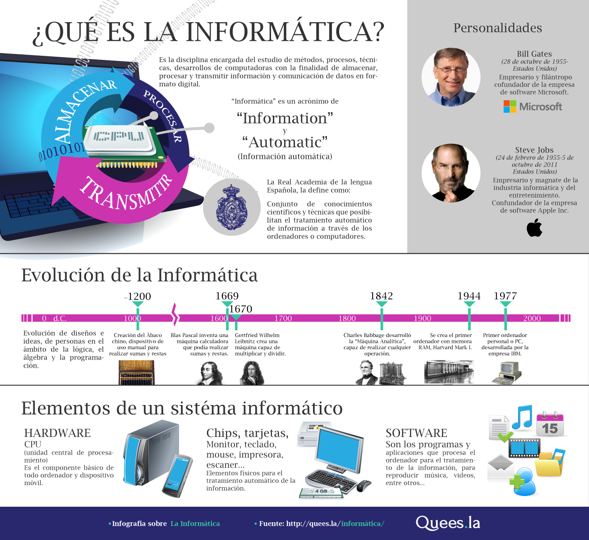
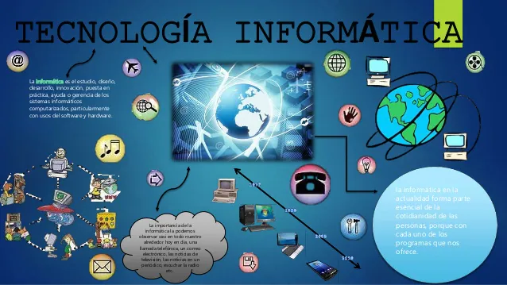
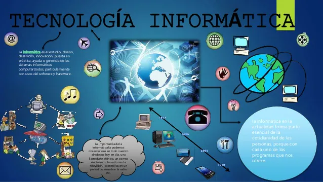
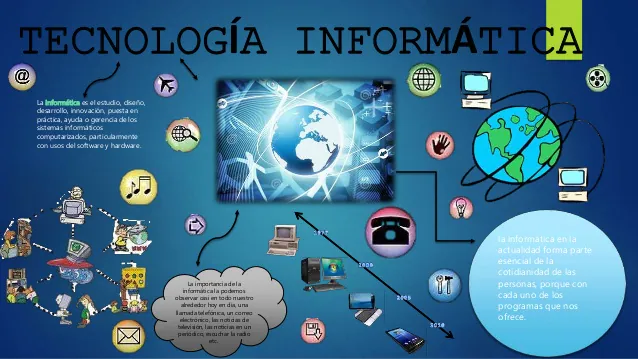
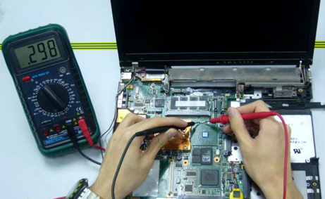
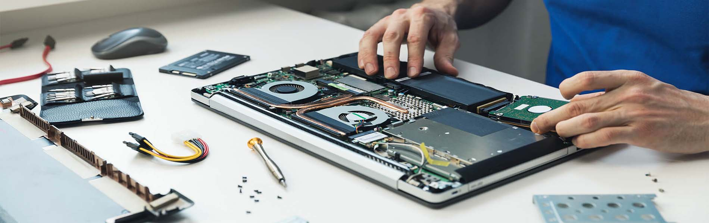

Instituto Hondureño de Educación por Radio
INFORMÁTICA
EL Perfil contiene el conjunto de conocimientos,habilidades,destrezas,actitudes y comportamientos integrados que caracterizan las competencias técnicas específicas alcanzadas por el egresado de la carrera de Bachiller Técnico Profesional en Informática.

El Bachiller Técnico en Informática se podrá desempeñar en:Centros o departamentos de informática de cualquier institución o empresa,asistiendo al personal en el uso de herramientas de ofimática,en el correcto funcionamiento del equipo así como en la creación de programas que sean necesarios para el manejo de la información de las instituciones o empresas.
 
La creación de medianas empresas dedicadas a asesorías en sistemas de información, mantenimiento correctivo y preventivo de equipo tecnológico, instalación de redes locales y
capacitación sobre tecnología,talleres o empresas de servicios técnicos en computación.

La creación de medianas empresas dedicadas a asesorías en sistemas de información, mantenimiento correctivo y preventivo de equipo tecnológico, instalación de redes locales y
capacitación sobre tecnología,talleres o empresas de servicios técnicos en computación.

La creación de medianas empresas dedicadas a asesorías en sistemas de información, mantenimiento correctivo y preventivo de equipo tecnológico, instalación de redes locales y
capacitación sobre tecnología,talleres o empresas de servicios técnicos en computación.
 
El egresado de este bachillerato podrá demostrar en el campo de trabajo profesionalismo,con una cultura y práctica de capacitación constante según los últimos avances tecnológicos;

De 15 a 18 años
Distribución de la carga
Contaduría
(c) Derechos reservados Diseñado por Grupo 9 proyecto diseño web, 12vo informática sección2 -2021
Conocimiento
El egresado de este bachillerato podrá demostrar en el campo de trabajo profesionalismo,con una cultura y práctica de capacitación constante según los últimos avances tecnológicos; El conocimiento de las herramientas de Ofimática son:- 1.Procesadores de texto.
- 2.Hojas de cálculo.
- 3.Diseñador de presentaciones.
- 4.Bases de datos.
- 5.Diseño de publicaciones.
- 6.Navegadores de Internet.
- 7.Servicios de mensajería.
- 8.Electrónica.
- 9.Tráfico
- 10.Respaldo y manejo de archivos de forma local y en red.
- Soporte Técnico:Instalación, mantenimiento y reparación de computadoras.
- Diseño Web:Creación, Mantenimiento y actualización de sitios Web.
Habilidades
- 1-Interpreta manual y documentación relacionada con la infraestructura tecnológica.
- 2-Diseña planes de mantenimiento de la infraestructura tecnológica.
- 3-Elabora y ejecuta planes de mantenimiento.
- 4-Potencia la institución a través del manejo de presencia en Internet.
- 5-Conoce y utiliza sistemas operativos y herramientas ofimáticas y tecnológicas de punta.
- 6-Propone cambios en la infraestructura tecnológica institucional.
- 7-Comunica cordial y eficientemente los planes y actividades del departamento o unidad de informática.
- 8-Diseña Sitios Web.
- 9-Repara y actualiza equipo tecnológico.
- 10-Instala, utilizada y repara infraestructura de redes.
- 11-Capacita en temas tecnológicos y de interés personal e institucional.
Actitudes y Comportamiento
- 1-Responsabilidad en el manejo del equipo.
- 2-Participación y liderazgo activa en la elaboración y ejecución de programas de mantenimiento.
- 3-Practica medidas de higiene y seguridad.
- 4-Trabaja en equipo.
- 5-Aplica el análisis de problemas para la toma de decisiones.
- 6-Respeto y crítica constructiva hacia el trabajo de y con los demás.
- 7-Proactividad en la gestión de recursos.
Bachillerato Técnico Profesional en Informática
Estructura de estudio por Ciclos
| Primer Ciclo | Segundo Ciclo | Tercer Ciclo |
| Formacion de fundamento | Formación Orientada | Formación Específica Práctica Profesional Trabajo Educativo Social |
| 2 Semestre | 1 Semestre | 3 Semestre |
Formación Específica
| Áreas Curriculares | Espacios Curriculares |
| CONTABILIDAD | Contabilidad I Contabilidad II Contabilidad de costos Contabilidad bancaria |
| FINANZAS | Matemáticas Financieras Administración Financiera I Administración financiera II |
| GESTIÓN Y SERVICIO AL CLIENTE |
Operaciones Tributarias Atención al cliente |
| LEGISLACIÓN | Legislación Mercantil |
| AUDITORIA | Auditoria |
| INFORMÁTICA | Informática contable |
| ECONOMIA | Economía |
| ADMINISTRACIÓN | Administracio General |
| Practica Profesional |
Distribución de la carga
y espacios curriculares
Primer Año
| I SEMESTRE | II SEMESTRE |
| Espacio Curricular | Espacio Curricular |
| Matemática I | Matemáticas II |
| Español I | Español II |
| Física I | Física II |
| Química I | Química II |
| Biología I | Biología II |
| Inglés I | Inglés II |
| Sociología | Historia de Honduras |
| Filosofía | Orientación Vocacional |
| Informática | Lenguaje Artístico |
| Psicologia | Educación Física y Deporte |
Segundo Año
| I SEMESTRE | II SEMESTRE |
| Espacio Curricular | Espacio Curricular |
| Matemática III Aplicada | Mercadotecnia |
| Lengua y Literatura | Organización del Trabajo |
| Inglés Técnico III | Proyectos y Presupuesto |
| Formación Específica: | Formación Específica |
| Contabilidad I | Matemática Financiera |
| Administración General | Contabilidad |
Tercer Año
| I SEMESTRE | II SEMESTRE |
| Formación Específica | Formación Específica |
| Formación Específica | Formación Específica |
| Economía | Administración Financiera II |
| Legislación Mercantil | Contabilidad de Costos |
| Operaciones Tributarias | Auditoría |
| Contabilidad Bancaria | Servicio al Cliente |
| Administración Financiera I | |
| Informática Contable | Practica Profesional |
| Trabajo Educativo Social |
(c) Derechos reservados Diseñado por Grupo 9 proyecto diseño web, 12vo informática sección2 -2021